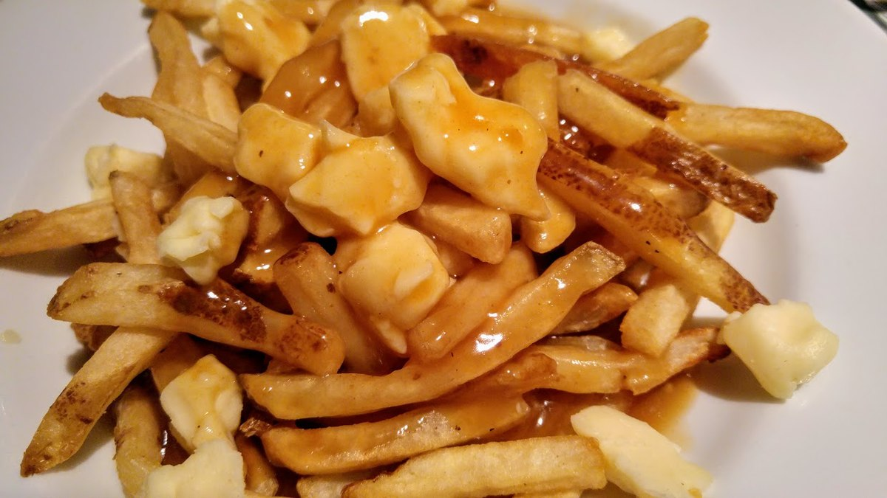

Real Poutine Recipe

Description
A poutine is a Canadian dish that is fries and cheese curds covered in gravy.
Ingredients
- Any kind of Fries (or Wedges)
- Cheese curds or Grated Cheese
- Gravy
Steps
- Heat oil in a deep fryer or deep heavy skillet to 365 degrees F (185 degrees C). While the oil is heating, you can begin to warm your gravy.
- Place the fries into the hot oil, and cook until light brown, about 5 minutes. Make the fries in batches if necessary to allow them room to move a little in the oil. Remove to a paper towel lined plate to drain.
- Place the fries on a serving platter, and sprinkle the cheese over them. Ladle gravy over the fries and cheese, and serve immediately.
Return to Main Page